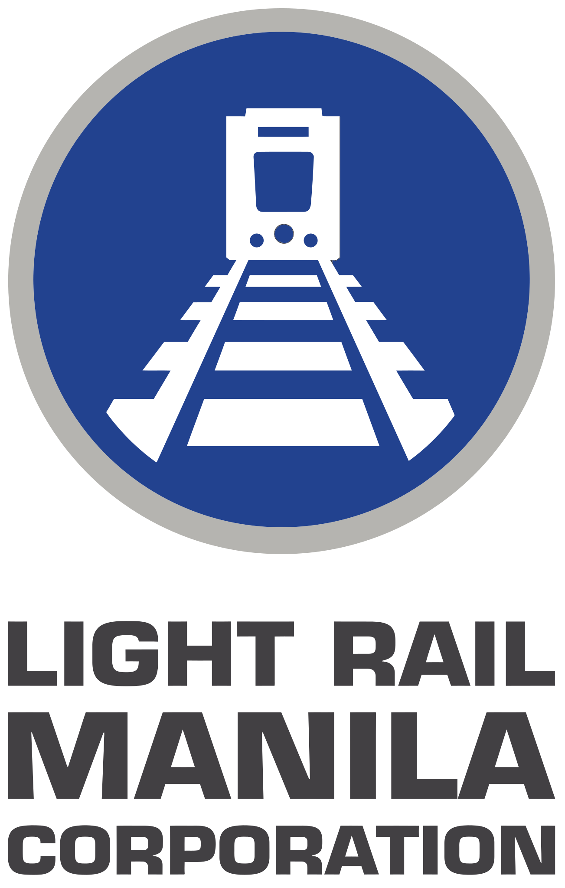

Light Rail Manila Corporation
Light Rail Manila Corporation (LRMC) is a rail service company based in Pasay, Metro Manila, Philippines. It is a consortium of companies engaged in the operation and maintenance of the Manila Light Rail Transit System Line 1 (Line 1) since September 2015. The consortium is composed of Metro Pacific Investments Corporation and Sumitomo Corporation's Metro Pacific Light Rail Corp. (MPLRC); AC Infrastructure Holdings Corp. (a subsidiary of Ayala Corporation); and Macquarie Infrastructure Holdings (Philippines) Pte. Ltd.
| Light Rail Manila Corporation | |
|---|---|
|  | |
| Overview | |
| Franchise(s) | LRT Line 1 |
| Stations operated | 20 |
| Headquarters | Engineering Building, LRTA Compound, Andrews Avenue, Pasay, Metro Manila, Philippines |
| Locale | Metro Manila |
| Dates of operation | September 12, 2015–present |
| Type | Private |
| Founded | September 2015 |
| Key people | Juan F. Alfonso (President & CEO) |
| Website | www.lrmc.ph  |
Background
The privatization of the entire maintenance and operation of the Manila Light Rail Transit Line 1 was the first infrastructure project under the Public-Private Partnership (PPP) program of the Benigno Aquino III administration announced by the Department of Transportation in May 2011. The project's objectives were to attract billions of pesos of investments from the private sector in order to improve the system's severely deteriorated condition, as well as to relieve the government of its obligation to spend more than ₱7 billion in annual subsidies just to keep the fares within reach of commuters.In 2012, an extension of the LRT Line 1 to Cavite was announced. The project also includes an operations and maintenance contract. The project was approved by former President Benigno Aquino III in March 2012. Meanwhile, the bidding for the project started on June 4, 2012.
Development
On April 24, 2012, Metro Pacific Investments Corporation (MPIC) and Ayala Corporation launched a partnership after both companies signed a memorandum of understanding.The companies formed a consortium and in November 2012, the consortium was cleared to proceed with the bidding process along with three other companies. However, in 2013, the three other companies withdrew from the bidding. In August 2013, Ayala Corporation also dropped out of the consortium, leaving Metro Pacific as the lone bidder. MPIC's bid was later declared as non-compliant, causing the bidding process to fail.
The consortium once again submitted a bid in May 2014. Despite public opposition that the privatization may result in an increase in fares for the LRT Line 1, on September 12, 2014, the Department of Transportation and Communications and the Light Rail Transit Authority awarded the project to the consortium. The concession agreement was signed on October 2, and the consortium took over the Line 1 operations on September 12, 2015, Under the ₱65 billion 32-year concession agreement with the Department of Transportation and Light Rail Transit Authority, the company is mandated to carry out the rehabilitation of Line 1 as well as to provide 120 new train coaches to the system. The concession also includes the ₱35 billion South Extension Project or Cavite Extension Project of the Line 1 to Niog station in Cavite which officially begun construction on May 7, 2019, after several years of delay due to right-of-way issues, as well as the north extension to the North Avenue Grand Central station in Quezon City whose exact location was settled in 2016 and which broke ground in September 2017.
Light Rail Manila Corporation's parent companies Metro Pacific Investments Corporation and Ayala Corporation have earlier been awarded the tap-and-go fare payment system project for all three rail transit lines in Metro Manila, the Beep smart card rolled out in July 2015 through another joint venture in AF Payments Incorporated, as well as the automated fare collection system project which was rolled out in December 2015. The parent companies also proposed a bid for the operations and maintenance of the Manila Light Rail Transit System Line 2, and the ₱171 billion North-South Railway Project of the Philippine National Railways which includes the rehabilitation and operation of the 478-kilometer Tutuban-Legazpi line. The Line 2 privatization would later be shelved, while the North-South Railway Project would later be funded by foreign loans as two separate projects: the North–South Commuter Railway and the PNR South Long Haul.
Entry of Sumitomo and contemporary history
On May 29, 2020, Sumitomo Corporation acquired a 34.9% stake in the subsidiary of Metro Pacific Investments Corporation that holds an effective 55 percent stake in Light Rail Manila Corporation (LRMC).On April 21, 2021, the company signed a memorandum of understanding with the Metals Industry Research and Development Center of the Department of Science and Technology for the repair of the LRT Line 1 trains, and the re-engineering, fabrication, and repair of train parts that are obsolete and/or no longer available in the market.
Ownership of the company before 2020:
- MPLRC (Metro Pacific) (55%)
- Ayala (35%)
- Macquarie (10%)
Ownership of the company since May 2020:
- MPLRC (Sumitomo) (19.2%)
- MPLRC (Metro Pacific) (35.8%)
- Ayala (35%)
- Macquarie (10%)